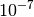
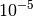

Interface to CFOUR by J. Stanton and J. Gauss¶
Code author: Lori A. Burns
Section author: Lori A. Burns
Module: Keywords, PSI Variables, Samples
Psi4 contains code to interface to the Cfour quantum chemistry suite of John F. Stanton (U. Texas, Austin) and Jürgen Gauss (U. Mainz), which is available after a license agreement from http://www.cfour.de/.
Installation¶
Follow the instructions provided with the Cfour download to install the
executable or to build the source. To by used by Psi4, the program
binary (xcfour) must be found in your PATH or
PSIPATH. The GENBAS file containing basis sets in Cfour
format is not necessary for this interface, but if you prefer to access
basis sets the “Cfour way” using a custom GENBAS file (the distributed
one is included with the interface), it, too, must be in PATH or
PSIPATH. If Psi4 is unable to execute the binary, an error
will be reported.
Caution
The p4c4 interface hasn’t been fully adapted for the new March 2014 version.
Cfour for Psi4 Users¶
- Set memory as usual
- Set molecule as usual
- Set basis set as usual (Cfour only cares about orbital basis, no fitting bases)
- Set the task as usual, indicating Cfour as the intended code by
prepending “c4-” to the method argument. So
energy('scf')becomesenergy('c4-scf')andoptimize('ccsd(t)')becomesoptimize('c4-ccsd(t)'). Find available methods forenergy()at Energy (CFOUR) and foroptimize()at Gradient (CFOUR). - Generally, the p4c4 interface will handle best practices for path of
execution:
vcc/ecc, derivative type, etc. The user is still responsible for setting convergence, frozen core, guess, diis, etc. For the moment, so-called “best-practices” keywords are summarized at Best Practices. - For the type of computation intended, find appropriate options at Keywords. These keyword summaries contain the same information as the proper CFOUR options list plus notes on keyword relevance when run through Psi4. Information at the CFOUR manual may also be useful, as may the many samples at psi4/samples/cfour.
- Set Cfour keywords just like Psi4 keywords. The names of keywords are unchanged beyond a prepended “cfour_”. (Though be aware that common abbreviations like CALC and REF must be fully spelled out as CFOUR_CALC_LEVEL and CFOUR_REFERENCE when used in Psi4.)
- In limited trial cases, keywords nominally directed at non-Cfour modules
are translated into their Cfour counterparts. For example, setting
REFERENCE will appropriately set CFOUR_REFERENCE. For a
list of applicable keywords, see source of
qcdb.cfour.muster_psi4options(). - Consult Functionality for information on what Cfour functionality is accessible through Psi4.
Psi4 for Cfour Users¶
In the simplest use of the Psi4/Cfour interface, a Psi4 input file
can simply “wrap” a ZMAT file and execute xcfour. This is
illustrated in the following example:
cfour {
UHF-SCF energy calculation
N
H 1 R
H 1 R 2 A
R=1.008
A=105.0
*ACES2(CALC=HF,BASIS=qz2p
MULT=2,REF=UHF
OCCUPATION=3-1-1-0/3-0-1-0
SCF_CONV=12
MEMORY=20000000)
}
energy('cfour')
Here, the contents of the cfour {...} block are written directly to a
ZMAT file. This is joined by a default GENBAS file
(psi4/share/basis/GENBAS). To preferentially use your own GENBAS,
place it in PATH or PSIPATH. The line calling
energy() with argument 'cfour' invokes
xcfour.
After execution of the energy('cfour') line completes, Cfour results
are read back into Psi4 format and are thereafter accessible for
further processing in the input file. See Output for
details. This storage of results in variables and arrays in memory for
the duration of the Psi4 instance (as opposed to solely in files)
is the only advantage thus far incurred by the P4C4 interface. We’ll call
this mode of basic utility the “sandwich” mode.
Molecule specification in Psi4 allows Cartesians, Z-matrices, mixed
Cartesian/Z-matrix, negation of variables, delayed specification of
variables, specification of fragments, etc., all in a whitespace-tolerant
format. See Molecule and Geometry Specification for details and
cfour/mints5 for examples. When a Psi4-style molecule is
supplied, its geometry is written to ZMAT in Cartesian form and the
CFOUR_COORDINATES=CARTESIAN, CFOUR_UNITS=ANGSTROM,
CFOUR_CHARGE, and CFOUR_MULTIPLICITY keywords are set
appropriately in the *CFOUR(...) directive.
Warning
There exist molecules (e.g., allene) where the inertial frame is not unique (planes along atoms or between atoms). The orientation reconciling machinery currently does not handle these cases and will fail with “Axis unreconcilable between QC programs”. I will get to this soon.
Whenever the molecule is supplied in Psi4 format, the job control
keywords must be too. All Cfour keywords are the usual
ones, prepended by cfour_ to avoid any possible name conflicts. As
detailed in Job Control Keywords, setting keywords is flexible in
format. The previous example translates to:
# UHF-SCF energy calculation
molecule {
0 2 # multiplicity from the MULT keyword
N
H 1 R
H 1 R 2 A
R=1.008
A=105.0
}
set {
cfour_CALC_level=HF # only full keyword names allowed
cfour_BASIS=qz2p
#MULT=2 # now in molecule {...} block
cfour_REFerence=UHF
cfour_OCCUPATION [[3, 1, 1, 0], [3,0,1,0] ] # arrays in python notation
cfour_SCF_CONV=12
cfour_MEMORY=20000000
}
energy('cfour')
Here, note that none of capitalization, equals sign, or whitespace matter
for the keyword commands. Specifcation of strings and integers requires no
translation; booleans have extended freedom of
format; arrays must be translated into Python-style (square-bracket
bounded and comma delimited) of appropriate dimension. There are many
sample inputs in psi4/tests/cfour/ starting with sp- that take
examples from the Cfour manual and first run them in sandwich mode and
then run them as translated into Psi4 format.
Note
Psi4 only recognizes keywords by their full name, so the common Cfour keyword abbreviations CALC, REF, etc. must be replaced by their proper names of CFOUR_CALC_LEVEL, CFOUR_REFERENCE, etc.
Whenever the molecule is supplied in Psi4 format, it is possible to perform geometry optimizations where Cfour supplies the gradient and the Psi4 module optking drives the structural changes. Because of the limitations on geometry specification for optimizations in Cfour, optking-driven optimizations are the only optimizations allowed in the P4C4 interface. (The exception is sandwich mode, which, of course, permits optimizations with the Cfour optimizer.) Below is an example of a geometry optimization:
memory 200 mb
molecule {
O
H 1 R
H 1 R 2 A
R=0.958
A=104.5
}
set {
cfour_CALC_level CCSD(T)
cfour_BASIS DZP
cfour_CC_CONV 12
cfour_LINEQ_CONV 12
cfour_SCF_CONV 12
g_convergence cfour
}
optimize('cfour')
Note that the primary change is the exchange of energy()
for optimize() to trigger an optimization. Setting
G_CONVERGENCE=CFOUR provides a good imitation of Cfour
default convergence criteria. Although Cfour produces gradients only in
its standard orientation and atom ordering, these are transformed back to
input orientation by the P4C4 interface. Several sample inputs in
psi4/tests/cfour/ starting with opt- show basic geometry
optimizations. cfour/mints5-grad shows optimizations from a
variety of molecule input formats, and cfour/psi-ghost-grad
shows an optimization with ghosted atoms. To obtain a single gradient
sans optimization, call instead gradient().
Note that it can be convenient to monitor the progress of a geometry
optimization by grepping the tilde ~ character.
Measures of convergence in internal coordinates in au.
Criteria marked as inactive (o), active & met (*), and active & unmet ( ).
--------------------------------------------------------------------------------------------- ~
Step Total Energy Delta E MAX Force RMS Force MAX Disp RMS Disp ~
--------------------------------------------------------------------------------------------- ~
Convergence Criteria 1.00e-06 * 3.00e-04 * 1.00e-06 * 1.20e-03 * o ~
--------------------------------------------------------------------------------------------- ~
1 -76.33224285 -7.63e+01 2.41e-03 1.60e-03 1.51e-02 8.82e-03 o ~
2 -76.33226097 -1.81e-05 4.84e-04 4.03e-04 7.71e-04 * 7.04e-04 o ~
3 -76.33226140 -4.39e-07 * 4.31e-05 * 3.58e-05 9.89e-05 * 8.93e-05 o ~
4 -76.33226141 -4.26e-09 * 9.76e-07 * 6.58e-07 * 6.22e-06 * 3.71e-06 o ~
--------------------------------------------------------------------------------------------------------------- ~
Step Total Energy Delta E MAX Force RMS Force MAX Disp RMS Disp ~
--------------------------------------------------------------------------------------------------------------- ~
1 -76.332242848098 -76.332242848098 0.00241281 0.00160359 0.01507630 0.00881949 ~
2 -76.332260965382 -0.000018117284 0.00048446 0.00040256 0.00077146 0.00070447 ~
3 -76.332261404452 -0.000000439070 0.00004307 0.00003577 0.00009889 0.00008926 ~
4 -76.332261408714 -0.000000004262 0.00000098 0.00000066 0.00000622 0.00000371 ~
--------------------------------------------------------------------------------------------------------------- ~
The above example also shows the total memory for the computation being set in Psi4 format. See Memory Specification for details. When specified, the memory value is passed on to Cfour by setting keywords CFOUR_MEMORY_SIZE and CFOUR_MEM_UNIT=MB.
Psi4 has an extensive basis set library in
Gaussian94 format. See Basis Sets for details. Contrasts to
Cfour basis handling include identifying basis sets by standard name
(aug-cc-pVDZ instead of AUG-PVDZ), direct handles for
diffuse-function-pruned sets (e.g., jun-cc-pVDZ), case insensitivity,
appropriate setting of spherical/Cartesian depending on basis set design,
and syntax to set different basis sets to different classes of atoms
without listing each atom. All of these features are available to Cfour by
using the BASIS keyword instead of CFOUR_BASIS
(accompanied, of course, by specifying the molecule Psi4-style).
Internally, Psi4 processes the basis set as usual, then translates
the basis set format and writes out a GENBAS file with an entry for
each atom. The P4C4 interface sets keyword CFOUR_BASIS=SPECIAL
and CFOUR_SPHERICAL as appropriate, then writes the basis section
necessary for SPECIAL below the *CFOUR(...) block. (I’m sorry that the
name of the basis doesn’t appear in ZMAT, but the combination of the
~14 character basis name limit and the absence of a comment line marker
rather precludes that helpful label.)
The input below employs a Psi4 library basis set and also introduces
the final stage of conversion toward Psi4 format. Instead of the
generic 'cfour', the computational method is specified as the first
argument to the optimize() call. In the computational
command below, the string argument 'c4-ccsd(t)' directs that a CCSD(T)
computation be run using Cfour (as opposed to 'ccsd(t)' which would
call Psi4 CC code). Specifying computational method in this manner
sets CFOUR_CALC_LEVEL from the argument and
CFOUR_DERIV_LEVEL as appropriate from the function call:
energy(), gradient(), or
optimize(). If those keywords are also set explicitly to
contradictory values, the interface will complain.
memory 2 gb
molecule CH2F2 {
units au
C 0.0000000000 -0.0000000000 1.0890958457
F 0.0000000000 -2.1223155812 -0.4598161475
F -0.0000000000 2.1223155812 -0.4598161475
H 1.7084139850 0.0000000000 2.1841068002
H -1.7084139850 -0.0000000000 2.1841068002
}
set basis aug-cc-pvdz
set rms_force_g_convergence 6
set cfour_abcdtype aobasis
set cfour_scf_conv 12
set cfour_cc_conv 12
set cfour_lineq_conv 12
optimize('c4-ccsd(t)')
The utility of this method specification is that examination can be made of the reference, the derivative level, the excitation level, etc. and some options can be set according to best practices. Practically speaking, CFOUR_CC_PROGRAM (and eventually CFOUR_ABCDTYPE) will always be set to the fastest safe value. For example, the input above will run with CFOUR_CC_PROGRAM=ECC unless explicitly set to VCC.
An advantage of Psi4‘s Python driver is that any number of common
work-up procedures can be automated and wrapped around the the
conventional single-point and optimization procedures at the heart of all
quantum chemistry codes. Three core “wrappers” available in Psi4 are
_nbody_gufunc(),
database(), and
complete_basis_set(); read their respective sections
for details, but an overview is provided here. _nbody_gufunc()
computes the interaction energy of a bimolecular complex (counterpoise-corrected,
not, or both).
molecule dimer {
Ne
--
Ne 1 R
symmetry c1
}
Rvals=[2.5, 3.0, 4.0]
set basis aug-cc-pVDZ
for R in Rvals:
dimer.R = R
ecp = cp('c4-mp2')
print_stdout('R [A] = %.1f IE [kcal/mol] = %.3f\n' % (R, psi_hartree2kcalmol * ecp))
yields
R [A] = 2.5 IE [kcal/mol] = 0.804
R [A] = 3.0 IE [kcal/mol] = 0.030
R [A] = 4.0 IE [kcal/mol] = -0.014
Next, the database() wrapper allows any computational
model chemistry to be applied a predefined collection of molecules. Thus
an input
set {
basis jun-cc-pvdz
d_convergence 9
}
database('c4-mp2','nbc10',cp='on',subset='MeMe')
yields the counterpoise-corrected interaction energy for several points along the dissociation curve of methane dimer, which is a member of the NBC10 database:
//>>>>>>>>>>>>>>>>>>>>>>>>>>>>>>>>>>>//
// Database nbc10 Results //
//<<<<<<<<<<<<<<<<<<<<<<<<<<<<<<<<<<<//
For each VARIABLE requested by tabulate, a 'Reaction Value' will be formed from
'Reagent' values according to weightings 'Wt', as for the REQUESTED ENERGY below.
Depending on the nature of the variable, this may or may not make any physical sense.
==> Requested Energy <==
----------------------------------------------------------------------------------------------
Reaction Reaction Energy Error Reagent 1 Reagent 2
Ref Calc [kcal/mol] [H] Wt [H] Wt
----------------------------------------------------------------------------------------------
NBC1-MeMe-3.2 0.0690 1.1639 1.0949 -80.72700202 1 -40.36442840 -2
NBC1-MeMe-3.3 -0.2390 0.6709 0.9099 -80.72764911 1 -40.36435916 -2
NBC1-MeMe-3.4 -0.4170 0.3407 0.7577 -80.72806043 1 -40.36430165 -2
NBC1-MeMe-3.5 -0.5080 0.1244 0.6324 -80.72831099 1 -40.36425461 -2
NBC1-MeMe-3.6 -0.5410 -0.0129 0.5281 -80.72845373 1 -40.36421659 -2
NBC1-MeMe-3.7 -0.5390 -0.0961 0.4429 -80.72852567 1 -40.36418623 -2
NBC1-MeMe-3.8 -0.5150 -0.1430 0.3720 -80.72855247 1 -40.36416227 -2
NBC1-MeMe-3.9 -0.4800 -0.1659 0.3141 -80.72855167 1 -40.36414365 -2
NBC1-MeMe-4.0 -0.4390 -0.1733 0.2657 -80.72853498 1 -40.36412938 -2
NBC1-MeMe-4.1 -0.3960 -0.1712 0.2248 -80.72850993 1 -40.36411859 -2
NBC1-MeMe-4.2 -0.3540 -0.1633 0.1907 -80.72848118 1 -40.36411044 -2
NBC1-MeMe-4.3 -0.3150 -0.1525 0.1625 -80.72845143 1 -40.36410422 -2
NBC1-MeMe-4.4 -0.2790 -0.1403 0.1387 -80.72842215 1 -40.36409932 -2
NBC1-MeMe-4.6 -0.2170 -0.1155 0.1015 -80.72836761 1 -40.36409177 -2
NBC1-MeMe-4.8 -0.1680 -0.0933 0.0747 -80.72831991 1 -40.36408563 -2
NBC1-MeMe-5.0 -0.1300 -0.0747 0.0553 -80.72827951 1 -40.36408021 -2
NBC1-MeMe-5.4 -0.0800 -0.0479 0.0321 -80.72821875 1 -40.36407122 -2
NBC1-MeMe-5.8 -0.0500 -0.0312 0.0188 -80.72817678 1 -40.36406353 -2
----------------------------------------------------------------------------------------------
Minimal Dev 0.0188
Maximal Dev 1.0949
Mean Signed Dev 0.3509
Mean Absolute Dev 0.3509
RMS Dev 0.4676
----------------------------------------------------------------------------------------------
Thirdly, the complete_basis_set() wrapper allows any
compound computational method that can be expressed through CBS to be applied to a molecule while employing the minimum number
of calculations. For example, the job below computes a
triple-quadruple-zeta Helgaker extrapolation of the mp2 correlation energy
atop a quadruple zeta reference to which is appended a double-triple-zeta
Helgaker extrapolated ccsd(t) - mp2 delta correction. Since the mp2 has
been requested through Psi4 and the ccsd(t) through Cfour, the
wrapper runs only MP2/cc-pVQZ (P4), CCSD(T)/cc-pVDZ (C4), and
CCSD(T)/cc-pVTZ (C4) single-points.
molecule {
H 0.0 0.0 0.0
H 1.0 0.0 0.0
}
set mp2_type conv
cbs('mp2', corl_basis='cc-pV[TQ]Z', delta_wfn='c4-ccsd(t)', delta_basis='cc-pV[DT]Z')
This yields:
==> CBS <==
---------------------------------------------------------------------------------------------------------
Stage Method / Basis Energy [H] Scheme
---------------------------------------------------------------------------------------------------------
scf scf / cc-pvqz -1.10245974 highest_1
corl mp2 / cc-pv[tq]z -0.03561890 corl_xtpl_helgaker_2
delta c4-ccsd(t) - mp2 / cc-pv[dt]z 0.03507767 corl_xtpl_helgaker_2
total CBS -1.10300098
---------------------------------------------------------------------------------------------------------
Note that especially for complete_basis_set(), the
basis set needs to be specified through BASIS, not
CFOUR_BASIS. Many of the wrappers can be used in combination to,
for example, apply a compound method to every molecule in a database or to
optimize a molecule with an extrapolated basis set (findif only for the
moment- analytics coming).
Finally, any number and combination of jobs can be run from a single Psi4 input file. Depending on the nature of preceeding or following jobs, it is prudent to separate them with the following:
clean() # removes Psi4 scratch files
clean_variables() # empties the PSI variables list
cfour {} # empties the cfour block
Warning
Because p4c4 does not inspect the contents of the cfour {...}
block, once the user specifies a Psi4-style molecule, the
interface cannot judge whether a sandwich mode (drop the Psi4 molecule
and use the cfour block as the entirety of the ZMAT) or a standard mode
(translate the Psi4 molecule and append additional input from the
cfour block) is intended. The latter is what actually occurs. If
there is both a Psi4 molecule and a molecule in the cfour block,
ZMAT will end up with multiple molecules and multiple *CFOUR(...)
blocks, and it will not run. Therefore, if mixing sandwich and
standard or pure-Psi4 computations in an input file, place all
the sandwich jobs at the beginning before declaring Psi4
molecules. If necessary, clear the cfour block with cfour {} before
commencing standard P4C4 jobs.
Output¶
The output of xcfour invoked from a Psi4 input file is
written to the Psi4 output file as the computation progresses. If a
Cfour module terminates with a non-zero error code, the value will show up
in CFOUR ERROR CODE.
Energies & Scalars
After execution of xcfour has completed, the output string is extensively parsed and appropriate results are stored in PSI Variables. All gleaned variables are printed in the Cfour output section of the Psi4 output file, as shown below.
//>>>>>>>>>>>>>>>>>>>>>>>>>>>>>>>>>>>//
// Cfour c4-ccsd(t) Energy Results //
//<<<<<<<<<<<<<<<<<<<<<<<<<<<<<<<<<<<//
Variable Map:
----------------------------------------------------------------------------
"(T) CORRECTION ENERGY" => -0.007263598030
"CCSD CORRELATION ENERGY" => -0.275705492359
"CCSD TOTAL ENERGY" => -76.338453952539
"CCSD(T) CORRELATION ENERGY" => -0.007263598030
"CCSD(T) TOTAL ENERGY" => -76.345717550569
"CFOUR ERROR CODE" => 0.000000000000
"CURRENT CORRELATION ENERGY" => -0.007263598030
"CURRENT ENERGY" => -76.345717550569
"CURRENT REFERENCE ENERGY" => -76.062748460180
"MP2 CORRELATION ENERGY" => -0.270191667755
"MP2 OPPOSITE-SPIN ENERGY" => -0.204890356651
"MP2 SAME-SPIN ENERGY" => -0.065301311104
"MP2 TOTAL ENERGY" => -76.332940127935
"NUCLEAR REPULSION ENERGY" => 9.187331653300
"SCF TOTAL ENERGY" => -76.062748460180
The PSI Variables are also available from the input file for manipulation. For instance, to compute the MBPT 2 3/4 energy from MBPT 3 results, the following could be used.
energy('c4-mp3')
mp2p75_corl = 0.75 * get_variable('mp3 correlation energy') + \
0.25 * get_variable('MP2 correlation energy')
print mp2p75_corl + get_variable('scf total energy')
Caution
Some features are not yet implemented. Buy a developer a coffee.
- No PSI Variables for properties: e.g.,
SCF DIPOLE X - No PSI Variables for excited state energies
The formation of further regexes for properties, excited states, etc. is one of the primary areas in which this interface requires further work.
Gradients and Arrays
In addition to parsing the output stream, results are collected from files
written to the scratch directory. Presently, the GRD file is parsed
and printed to the output file, as shown below. Also printed is the Cfour
gradient after manipulation by the P4C4 interface and used by Psi4
going forward. Manipulation is necessary because Cfour determinedly uses
its own internal orientation and atom ordering while Psi4 naturally
expects the gradient to be aligned with the active molecule. The geometry
in GRD and the geometry of Psi4‘s active molecule are shifted,
rotated, flipped, and otherwise badgered into coincidence, then the same
manipulations are applied to the gradient in GRD, the result of which
is printed below and passed on to Optking.
//>>>>>>>>>>>>>>>>>>>>>>>>>>>>>>>>>>>//
// Cfour c4-scf Gradient Results //
//<<<<<<<<<<<<<<<<<<<<<<<<<<<<<<<<<<<//
...
Irrep: 1 Size: 4 x 3
1 2 3
1 0.0000000 -0.0122978 0.0000000
2 -0.0051192 0.0040993 -0.0088667
3 -0.0051192 0.0040993 0.0088667
4 0.0102384 0.0040993 0.0000000
CFOUR scratch file GRD has been read
4 0.0000000000
7.0000000000 -0.0880964705 0.0000000000 0.0000000000
1.0000000000 0.4080144050 -0.9178691296 -1.5897959670
1.0000000000 0.4080144050 -0.9178691296 1.5897959670
1.0000000000 0.4080144050 1.8357382590 0.0000000001
7.0000000000 -0.0122978407 0.0000000000 0.0000000000
1.0000000000 0.0040992802 -0.0051191833 -0.0088666856
1.0000000000 0.0040992802 -0.0051191833 0.0088666856
1.0000000000 0.0040992802 0.0102383666 0.0000000000
The gradient can also be accessed from the input file as a
psi4.Matrix object through
psi4.get_gradient().
Cfour Files
The contents of all files associated with Cfour are accessible from the
input file through the Python dictionary P4C4_INFO. That is,
P4C4_INFO['zmat'] returns a string of the input file sent to Cfour.
Accessible arguments are zmat, output, and any that have been
produced of grd. For example, to print to the screen if CC convergence
is reached, the following could be placed in the Psi4 input file.
energy('c4-ccsd')
print 'miracle?', 'miracle' in P4C4_INFO['output']
Scratch Files
By default, a separate subdirectory for each Cfour call is created within
the job’s scratch directory. To explicitly specify the location of the the
Cfour scratch, execute with, for example, energy('cfour',
path='/full/path/to/cfour/scratch'). Regardless of whether the location
is specified or default, whether to preserve the scratch directory after
the computation can be specified with energy('cfour', keep=True) or
(the default) energy('cfour', keep=False). path and keep are
keyword arguments that get interpreted by the
run_cfour() function documented below.
-
run_cfour(name[, keep, path])[source]¶ Function that prepares environment and input files for a calculation calling Stanton and Gauss’s CFOUR code. Also processes results back into Psi4 format.
This function is not called directly but is instead called by
energy()oroptimize()when a Cfour method is requested (through name argument). In order to function correctly, the Cfour executablexcfourmust be present inPATHorPSIPATH.- Many PSI Variables extracted from the Cfour output
- Python dictionary of associated file constants accessible as
P4C4_INFO['zmat'],P4C4_INFO['output'],P4C4_INFO['grd'], etc.
Parameters: - name (string) –
'c4-scf'||'c4-ccsd(t)'||'cfour'|| etc.First argument, usually unlabeled. Indicates the computational method to be applied to the system.
- keep (boolean) –
'on'||'off'Indicates whether to delete the Cfour scratch directory upon completion of the Cfour job.
- path (string) –
Indicates path to Cfour scratch directory (with respect to Psi4 scratch directory). Otherwise, the default is a subdirectory within the Psi4 scratch directory.
If specified, GENBAS and/or ZMAT within will be used.
- genbas (string) – Indicates that contents should be used for GENBAS file.
GENBAS is a complicated topic. It is quite unnecessary if the molecule is from a molecule {...} block and basis is set through Psi4‘s BASIS keyword. In that case, a GENBAS is written from LibMints and all is well. Otherwise, a GENBAS is looked for in the usual places: PSIPATH, PATH, PSIDATADIR/basis. If path kwarg is specified, also looks there preferentially for a GENBAS. Can also specify GENBAS within an input file through a string and setting the genbas kwarg. Note that due to the input parser’s aggression, blank lines need to be replaced by the text blankline.
Functionality¶
Through clever use of the cfour {...} block, one could run most any
Cfour computation through the P4C4 interface. In contrast, enumerated
below are tested functionalities where results from Cfour are collected
into Psi4 data objects.
Implemented
- Single-point
energy()commands for ground state methods. Examples: cfour/sp-rhf-ccsd_t_-ao-ecc, cfour/scf4, cfour/mints5. - Analytic
gradient()andoptimize()commands for ground state methods. Real and Ghost atoms permitted (though the latter will naturally collapse after several cycles). Examples: cfour/opt-rhf-ccsd_t_, cfour/mp2-1, and cfour/mints5-grad.
Warning
There exist molecules (e.g., allene) where the inertial frame is not unique (planes along atoms or between atoms). The orientation reconciling machinery currently does not handle these cases and will fail with “Axis unreconcilable between QC programs”. I will get to this soon.
- Finite difference of energy
gradient()andoptimize()for methods. Force withgradient('name', dertype=0), etc.. _nbody_gufunc()for computation of interaction energies with or without counterpoise correction. Example: cfour/dfmp2-1.database()for computation of a collection of molecules in a single input, with summarization of results. Examples: cfour/pywrap-db1 and cfour/psi-a24-grad.complete_basis_set()for computation of compound methods involving basis set extrapolations and/or delta corrections with any combination of Psi4 and Cfour computational methods and Psi4 basis sets. Example: cfour/pywrap-cbs1.
Not Yet Implemented
- Ground state CI energies and optimizations
- Excited state energies and optimizations
- Properties are not yet regex-ed, transformed into input frame, and stowed in PSI Variables.
- Property calls that required extra computation not yet translated into
property()computation command - Frequencies
Energy methods available through P4C4 interface
name calls method in Stanton and Gauss’s CFOUR program [manual] c4-scf Hartree–Fock (HF) c4-mp2 2nd-order Moller-Plesset perturbation theory (non-density-fitting) (MP2) c4-mp3 3rd-order Moller-Plesset perturbation theory (MP3) c4-mp4(sdq) 4th-order MP perturbation theory (MP4) less triples c4-mp4 full MP4 c4-cc2 approximate coupled cluster singles and doubles (CC2) c4-ccsd coupled cluster singles and doubles (CCSD) c4-cc3 approximate CC singles, doubles, and triples (CC3) c4-ccsd(t) CCSD with perturbative triples (CCSD(T)) c4-ccsdt coupled cluster singles, doubles, and triples (CCSDT) cfour expert full control over cfour program
Gradient methods available through P4C4 interface
name calls method in Stanton and Gauss’s CFOUR program [manual] c4-scf Hartree–Fock (HF) c4-mp2 2nd-order Moller-Plesset perturbation theory (non-density-fitting) (MP2) c4-mp3 3rd-order Moller-Plesset perturbation theory (MP3) c4-mp4(sdq) 4th-order MP perturbation theory (MP4) less triples c4-mp4 full MP4 c4-cc2 approximate coupled cluster singles and doubles (CC2) c4-ccsd coupled cluster singles and doubles (CCSD) c4-cc3 approximate CC singles, doubles, and triples (CC3) c4-ccsd(t) CCSD with perturbative triples (CCSD(T)) c4-ccsdt coupled cluster singles, doubles, and triples (CCSDT) cfour expert full control over cfour program
Specification Details¶
The above narrative introduction to the P4C4 interface should be
sufficient to get started. Issues of competition between Psi4 and
Cfour specification format are generally resolved behind the scenes:
not according to a simple rule but according to sensible, sometimes
intricate, rules governed by user intent (and integration of Cfour to
behave like a Psi4 module). Much can be gleaned by just running
inputs and inspecting the ZMAT passed to Cfour, but when questions
arise, here are the specifics, the governing laws.
Specifying a piece of input in Psi4 format is entering into a contract that you mean it. In particular this applies to molecule (including charge/multiplicity through
molecule optional_molecule_name {...}), memory (throughmemory value unit), computational method (through . If Cfour keywords are specified with values that contradict the Psi4 input, execution is halted.As an example, the input below is set up to fail in four ways: contradictory specification of memory, multiplicity, computational method, and derivative level. Note, though, that the
cfour_units angstromsetting is permissible, since it concurs with the value implied in the molecule block.memory 300 mb molecule { H H 1 0.7 } set basis 6-31g set cfour_multiplicity 3 # clash with implicit singlet in molecule {} above set cfour_units angstrom # no problem, consistent with molecule {} above set cfour_memory_size 100000000 # clash with 300 mb above set cfour_calc_level ccsd # clash with 'c4-scf' below set cfour_deriv_level first # clash with energy() below (use gradient('c4-scf') to achieve this) energy('c4-scf')Specifying anything in Psi4 format (molecule, basis, options, method call) starts building a
*CFOUR(...)directive for theZMATfile. Since the contents of thecfour {...}block are blindly appended to any input interpreted from Psi4 format, mixing of Psi4 and Cfour input formats likely will give rise to multiple*CFOUR(...)directives in the prospectiveZMAT, execution of which will be trapped and halted. Proper uses for thecfour {...}block are for the sandwich mode, where the entireZMATis enclosed, or for extra directives like%excite*, which presently have no other specification route.Specifying the basis is perhaps the regulated piece of input. Since basis set names differ between Psi4 and Cfour and it’s not practical to compare exponent-to-exponent, any input file with both BASIS and CFOUR_BASIS keywords present will halt. Once a basis set has been requested through BASIS, overriding the default spherical/Cartesian setting must be done through PUREAM (as opposed to CFOUR_SPHERICAL).
Specifying keywords that control geometry optimization is straightforward. Unless the optimization is invoked in sandwich mode, all Cfour optimization keywords (e.g., CFOUR_GEO_MAXCYC) are ineffective, as the Cfour optimizer is never invoked. Psi4 optimization keywords (e.g., GEOM_MAXITER) instead fill these roles.
Specifying the computational method (through, for instance,
energy('c4-ccsd')instead ofenergy('cfour')) often sets additional keywords consistent with best practices (e.g., CFOUR_CC_PROGRAM). Since those settings are implicit, any explicit setting of those those keywords, whether contradicting or concurring, takes priority (halts never generated). The following are some concrete examples. For the moment, click the source button atqcdb.cfour.muster_modelchem()for details of what keywords get set.runs in vcc since that’s Cfour’s default for cc_program
set cfour_calc_level ccsd energy('cfour')runs in ecc since Cfour’s default overwritten by keyword
set cfour_calc_level ccsd set cfour_cc_program ecc energy('cfour')runs in ecc since that’s best practice for the requested ccsd
energy('c4-ccsd')
runs in vcc since hidden default overwritten by keyword
set cfour_cc_program vcc energy('c4-ccsd')
Specifying certain keywords that are nominally applicable for pure-Psi4 modules directs them to fulfil analogous roles in the Cfour program (e.g., MAXITER is used to set CFOUR_SCF_MAXCYC). This keyword translation only takes place if the keywords are explicitly set in the input file (part of that contract that you mean it), meaning that Psi4‘s defaults don’t get imposed on Cfour. Also, in the case where a translatable pure-Psi4 keyword and its translation Cfour keyword are both set, the value attached to the latter is always used. Below are a few clarifying examples.
uses  SCF conv crit since that’s Cfour’s default for CFOUR_SCF_CONV
energy('c4-scf')
uses SCF conv crit since default overwritten by keyword
set cfour_scf_conv 6 energy('c4-scf')uses  SCF conv crit since default overwritten by SCF module keyword
set d_convergence 5 energy('c4-scf')uses SCF conv crit since default overwritten by SCF module keyword (local scope works, too) where the Psi4‘s more flexible float input has been rounded down to the integer required by Cfour
set scf d_convergence 5e-6 energy('c4-scf')uses SCF conv crit since default overwritten and Cfour module keyword trumps Psi4 SCF module keyword
set cfour_scf_conv 6 set d_convergence 8 energy('c4-scf')
The keyword translation feature is still in the proof-of-principle stage, so only a handful (found here) of keywords participate.
Note
Longtime Cfour users who may consider this keyword translation a flaw rather than a feature can avoid it entirely by confining keywords to the Cfour module along with BASIS and PUREAM (opt, too?)
Misc. Running¶
Naturally, in Psi4 multiple jobs can be run in succession from the input file.
Control optimizations with optking keywords HERE. Cfour GRD file is
written to Psi4 output file. Gradient transformed back into the frame
in which it was shipped off to Cfour is also written to the Psi4
output file and is available from input as get_gradient().
sandwich mode := molecule and cfour list within Naturally, additional jobs can follow in the input file. Depending on the nature of preceeding or following jobs, it is prudent to separate them with the following:
clean() # removes Psi4 scratch files
clean_variables() # empties the PSI variables list
cfour {} # empties
In this scheme, the contents of the cfour {...} block are tacked onto
the end of the ZMAT file that is otherwise written from psi style
format. It is by this route that, for example %excite* sections can at
present be spcified.
The execution of xcfour can be modified by a few parameters. Setting
the option CFOUR_OMP_NUM_THREADS sets the environment variable
OMP_NUM_THREADS for only the duration of the Cfour computation.
That is, portions of an input file that run Psi4 modules are
unaffected. Additionally, there are a few arguments to the function
run_cfour() that control the Cfour scratch
directory.